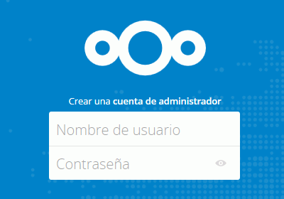
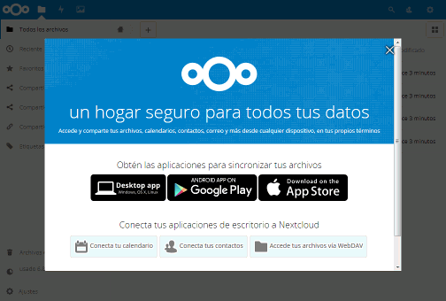
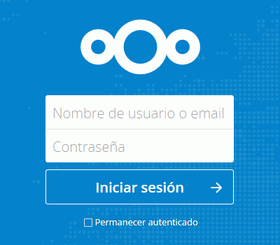
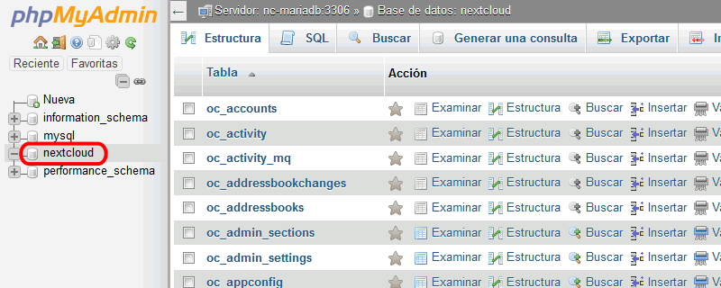
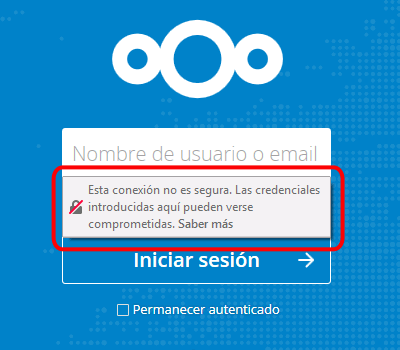
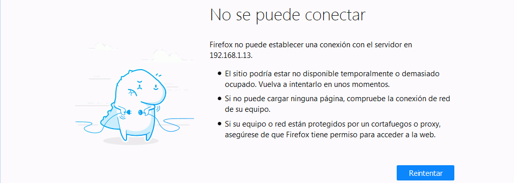
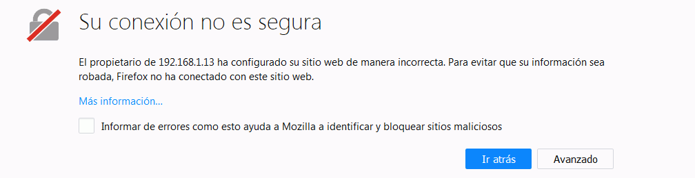

En esta lección se proponen ejercicios para conocer y utilizar Nextcloud. Se pueden consultar las soluciones de estos ejercicios de Nextcloud, aunque se recomienda intentar realizarlos primero sin recurrir a estas soluciones. A continuación se pueden realizar los ejercicios (2) de Nextcloud, en los que se amplian las funcionalidades de Nextcloud.
Actualmente (enero de 2018), Nextcloud no está disponible en Windows ni está disponible como instalador de Bitnami, por lo que lo instalaremos como contenedor Docker.
La imagen oficial Docker de Nextcloud es https://github.com/nextcloud/docker, disponible desde enero de 2017 a partir de una imagen creada por Pierre Ozoux.
En este ejercicio se trata de crear el contenedor Docker de Nextcloud en una máquina virtual.
Prepare una máquina virtual de Ubuntu 16.04 LTS Server con 16 GB de disco virtual e instale Docker.
Nextcloud puede utilizar su propia base de datos SQLite o utilizar una base de datos MariaDB/MySQL o PostgreSQL. Para instalaciones pequeñas como la de estos ejercicios, SQLite es una opción suficiente, pero en servidores reales se recomienda utilizar un sistema gestor de bases de datos independiente. Para practicar el uso de Docker, puede utilizar MariaDB. Para ello:
Cree una red e incluya los tres contenedores (MariaDB, phpMyAdmin y NextCloud) en ella.
Cree un contenedor de MariaDB a partir de la imagen bitnami/mariadb. Utilice la variable de configuracion ALLOW_EMPTY_PASSWORD.
Cree un contenedor de phpMyAdmin que escuche en un puerto distino del puerto 80, por ejemplo, en el 8081, a partir de la imagen bitnami/phpmyadmin. Utilice la variable de configuracion DATABASE_HOST para indicar el nombre del contenedor de MariaDB.
Cree en MariaDB con phpMyAdmin un usuario nextcloud, que pueda acceder desde cualquier ordenador, con contraseña nextcloud y base de datos única.
Cree un contenedor de Nextcloud a partir de la imagen nextcloud, que escuche en los puertos 80 y 443.
Compruebe en el navegador del ordenador anfitrión que puede ver la página de entrada en NextCloud, escribiendo la dirección http://AAA.BBB.CCC.DDD/, en la que AAA.BBB.CCC.DDD es la dirección IP de la máquina virtual.

NextCloud (1) 2 - Completar instalación
En este ejercicio se trata de completar la instalación de Nextcloud.
Consulte cuál es la dirección IP privada 172.BBB.CCC.DDD del contenedor de MariaDB.
sudo docker network inspect RED
Complete la instalación de NextCloud:
Nombre de usuario: admin
Contraseña: admin
Almacenamiento: directorio predeterminado
Base de datos: MySQL / MariaDB
Notas: La contraseña sugerida se considera muy débil y no debería utilizarse en un entorno real.
Se mostrará el interfaz de Nextcloud con un aviso de bienvenida

Salga de Nextcloud y compruebe que puede volver a entrar como administrador.

Si ha instalado Nextcloud de manera que utilice MariaDB como base de datos, compruebe con phpMyAdmin que se han creado las tablas correspondientes. Si no se hubiera creado ninguna tabla es que Nextcloud está utilizando SQLite.

Nextcloud (1) 3 - Actualizar Nextcloud
En este ejercicio se trata de actualizar Nextcloud, en caso de que haya una actualización disponible:
Nota: Actualmente (febrero de 2018), todavía no se ha publicado ninguna actualización de NExtCloud 13. La versión 13.0.1 está prevista para mediados de marzo de 2018.
Compruebe que al acceder a NextCloud mediante una conexión no cifrada http://AAA.BBB.CCC.DDD/, se muestra el aviso siguiente:

Intente entrar en Nextcloud como administrador mediante una conexión cifrada https://AAA.BBB.CCC.DDD/ y compruebe que se muestra el aviso siguiente:

Configure el servidor Apache del contenedor para permitir conexiones seguras.
Para ello, entre en el contenedor, genere un autocertificado, active el módulo SSL en Apache, habilite la configuración SSL en Apache y reinicie Apache.
Intente entrar en Nextcloud como administrador mediante una conexión cifrada https://AAA.BBB.CCC.DDD/ y compruebe que se muestra el aviso siguiente:

Añada al navegador la excepción para mostrar la página y compruebe que ya no se muestra el aviso de conexión no segura:
Configure el servidor Apache del contenedor para forzar el acceso mediante https.
Para ello, modifique el archivo de configuración de Apache apache2.conf que se encuentra en el contenedor y reinicie el servicio apache2.
Antes de modificar un archivo de configuración se recomienda siempre hacer una copia del archivo original.
En el archivo de congiguración, añada una directiva VirtualHost que redirija las peticiones http a https, en la que AAA.BBB.CCC.DDD es la IP de la máquina virtual:
Nota: Creo que el valor de Servername no es importante, pero debe haber Servername.
Compruebe que al escribir http://AAA.BBB.CCC.DDD/ se redirige automáticamente a https://AAA.BBB.CCC.DDD/
Nextcloud (1) 6 - Cambio de IP
Si cambiara la IP de la máquina virtual, la redirección de http a https realizada en el ejercicio anterior dejaría de funcionar correctamente porque en el archivo de configuración se guarda la URL de la máquina virtual. En clase esto ocurre a menudo, ya que el router de aula está continuamente asignando direcciones. En casa puede ocurrir más raramente. En este ejercicio se trata de provocar esta situación y corregirla.
Apague y reinicie la máquina virtual.
Compruebe si la IP de la máquina virtual ha cambiado. Si no ha cambiado automáticamente, cámbiela manualmente, reinicie la máquina virtual y compruebe que la IP ha cambiado.
Compruebe que Nextcloud no se redirige de http a https.
Corrija el archivo de configuración apache2.php con la nueva IP.
 Antes de modificar un archivo de configuración se recomienda siempre hacer una copia del archivo original.
Antes de modificar un archivo de configuración se recomienda siempre hacer una copia del archivo original.